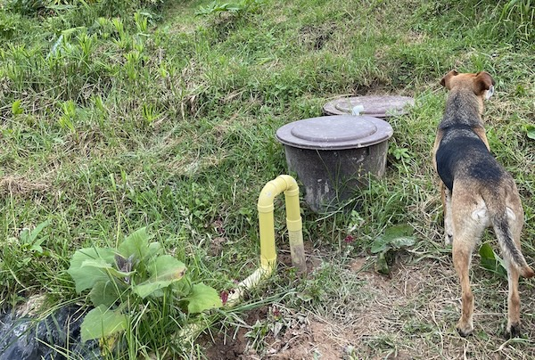
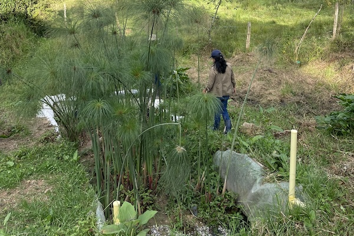

Neil Patel
Urban Economist | Water Security & Climate Adaptation
Data Collection and Monitoring for Vermifilter Toilets in Agua Bonita, Colombia



Affiliation: MIT D-Lab
Completion: August 2023
Ecoconcientizate is currently piloting a cutting-edge biological sewage treatment system specifically designed for use in rural Colombia. The vermifiltration system utilizes California red worms to compost fecal matter, and then drains liquids into a secondary layer of sand and gravel filters before transporting it to an artificial wetland for further treatment through a phytoremediation process. Our team conducted water quality testing on three vermifilter systems in Agua Bonita, Colombia. We also led bilingual community workshops in Spanish and English on at-home water quality monitoring for community members interested in installing their own vermifilter system.